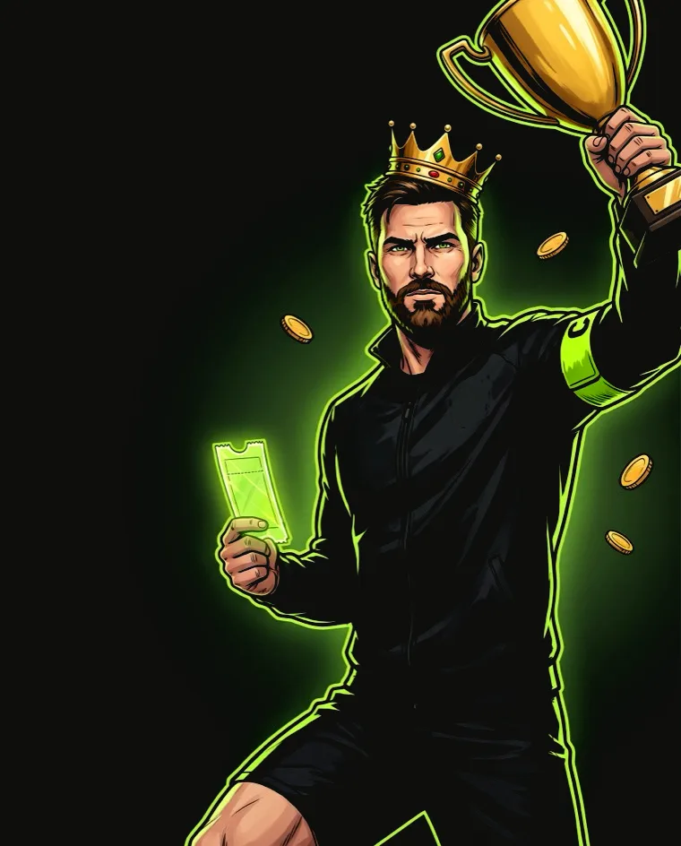

Match IQ
Три відповіді: суть, конверсія, метрики
Гра-прогноз на сторінці матчу. Читач робить три прогнози наосліп, звіряє їх із CaptainAI, уболівальниками та ринком — і лише потім бачить ціну власного сценарію.
prediction_locked подія аналітики, яка вже працює в прототипі
Ілюстративно вигадані дані демо
Метрика рішення за чим ухвалюємо рішення
«Маю думку про цей матч — і нема куди її подіти»
Читач відкриває превʼю, бо вже має гіпотезу: Байєр візьме, забʼє Шик, буде більше 2.5. Сьогодні ця думка помирає в коментарях.
Немає ставки в матчі
Емоційної, не грошової. Дивитися нема за що особисто — тільки за рахунок.
Немає дзеркала
Свою компетентність нема з чим звірити: я розумію футбол краще за середнього фана чи гірше?
Немає накопичення
Вгадане вчора сьогодні не існує. Сезон здогадок ні в що не складається.
Гра на три дотики всередині сторінки матчу
Три прогнози наосліп
Переможець, тотал, автор гола. Жодних чужих цифр на екрані.
Розкриття після кожного
CaptainAI, тисячі уболівальників і ринок — про той самий прогноз.
Power Pick і фіксація
Один прогноз — головний. Сценарій зафіксовано.
Ціни трьох партнерів
Коефіцієнти вперше зʼявляються тільки тут.
Фінальний свисток
Очікування результату — і є причиною повернутись.
Результат
Match IQ, серія, дивізіон, таблиці лідерів. Далі — наступний матч.
Рейтинг Match IQ
Серія матчів
Дивізіон
Гравці проти CaptainAI, клуб проти клубу
Спершу зобовʼязання, потім порівняння
Спершу вибір наосліп, потім розкриття чужих оцінок. Це не деталь інтерфейсу: на цьому тримається і залученість, і конверсія.
Це підказка
«62% уболівальників за Байєр» перед вибором стирає авторство: читач уже не автор прогнозу, а виконавець чужої думки.
Це дзеркало
Та сама цифра створює емоцію: «я бачу те, чого не бачить загал». Далі ставка стає ціною власного сценарію, а не банером.
Чому це виграшно саме для Tribuna
- Клубні спільноти — актив, якого немає у FotMob. Таблиця «клуб проти клубу» робить прогноз командною справою: я граю за North Stand, а не за себе.
- CaptainAI — наявний контент у ролі опонента. Модель, що просто друкує ймовірності, нудна. Модель, з якою є рахунок, — привід повернутися.
- Кожне розкриття і кожен результат ведуть у контент: розкриття — у превʼю, результат — у звіт.
Чим це не є
Не сервіс платних прогнозів: жодних «гарантованих ставок». Не фентезі-ліга: немає складу і щоденного зобовʼязання. Не гра для досвідченого беттора: ціль — читач, який уже прийшов на превʼю.
Механіка перевірена — новим є місце, де вона живе
Sky Bet Super 6
Безкоштовна гра-прогноз як верх воронки букмекера. Доводить, що прогноз конвертує краще за банер.
FotMob, OneFootball
Прогнози всередині матч-центру. Доводять, що механіка не заважає читанню.
Клубні спільноти
Ані Sky Bet, ані FotMob не мають клубних спільнот як структури. Тут прогноз стає командним видом спорту.
Один топ-матч на тиждень → топ-5 ліг → тижнева ліга з партнерськими призами
Перший етап навмисно вузький: одна гра на тиждень тримає поле щільним, таблицю — осмисленою, редакційну підтримку — реальною.
Наступні кроки, не прогалини
Полиця значків і картка для поширення. «Зберегти серію в акаунт» як мʼяка реєстрація. Weekend Quest, заморозка серії, дуелі. Живі коефіцієнти з порядком партнерів за країною та сповіщення «результат готовий».
Думка → порівняння → ціна
Ставку ми ніколи не пропонуємо першою. Порядок жорсткий — і він же є конверсійною воронкою.
Коефіцієнтів не існує до фіксації
Ціни приховані, доки сценарій не зафіксовано. Різниця між «поставте на Байєр» і «ваш сценарій коштує 4.20».
Сценарій сам стає конструктором ставки
Три прогнози = три події в експресі, зібраному без жодного зусилля. Найдорожчий для букмекера тип ставки падає в руки готовим.
Power Pick — ординаром
Експрес із трьох подій — високий барʼєр для того, хто ніколи не ставив. Ординар на найвпевненіший прогноз — найлегший вхід.
Три партнери, краща ціна підсвічена
Чесна версія «порівняй коефіцієнти»: видно, що шукали вигоду, а не продавали конкретного букмекера.
Вітальна пропозиція після першого переходу
Не на вході, а коли намір підтверджений дією. Один раз на профіль, закривається, позначена як ілюстративна.
Тижневий приз: топ-100 таблиці
Приз від партнера, а не грошовий від Tribuna. Приз і конверсійна подія — одне й те саме, тому механіка сама себе фінансує.
«Ваш прогноз проти ринку» — інформація, а не обіцянка
CaptainAI — модель · Уболівальники — голоси читачів · Ринок — коефіцієнти трьох партнерів
Імпліцитна ймовірність із середнього коефіцієнта: 1 / 2.10 = 47.6%. Для взаємовиключних ринків (1X2, тотал) маржу знімаємо нормуванням до 100% → 45%. Для «автора гола» події не взаємовиключні, тому лишається сира імпліцитна ймовірність.
Інакше ринок систематично виглядав би впевненішим за уболівальників і модель, і порівняння було б нечесним на його користь.
Воронка розкладена на події
Уже в прототипіКожен крок — окрема подія, бо просідання на різних кроках лікуються по-різному.
| Крок користувача | Подія | Метрика кроку | Що означає просідання |
|---|---|---|---|
| Побачив гру | match_page_view | entry rate | віджет не помітний на сторінці матчу |
| Почав | challenge_start | — | перше питання не інтригує |
| Зробив три прогнози | challenge_complete | complete / start | шлях задовгий, розкриття не тримає |
| Зафіксував | prediction_locked | completion rate | незрозуміло, навіщо фіксувати |
| Побачив ціни | odds_viewed | odds view rate | перехід до цін не мотивований |
| Відкрив картку партнера | handoff_opened | intent rate | пропозиція партнера не переконує |
| Пішов до партнера | bookmaker_click | handoff conversion | ціни неконкурентні або партнер не той для цієї країни |
| Зареєструвався, поповнив | постбек партнера | якість гравця | женемо неякісний трафік |
bookmaker_click при нижчому FTD rate — це провал, а не успіх.Запобіжники — умова роботи з ліцензованими партнерами
- 18+ на кожному екрані, у правилах і футері; підтвердження віку перед першим переходом.
- «Коефіцієнти ілюстративні» на картці партнера, у правилах і футері: демо не має читатись як справжня пропозиція.
- Партнери марковані, таймерів тиску немає. Єдиний відлік у продукті — реальний стартовий свисток.
- «Продовжити без ставки» так само помітний, як перехід до партнера.
- Блок 1X2 залишається. Match IQ додає другий маршрут до тих самих партнерів — для читача, який уже визначився, — а не замінює перший.
- Ніяких «гарантованих прогнозів», штучних дедлайнів і грошових призів від Tribuna — останнє вже інша ліцензійна категорія.

Weekly Betting-Intent Predictors (WBIP)
Скільки користувачів за один і той самий тиждень і зафіксували прогноз, і перейшли до партнера
WBIP(w) = | { u : ∃ prediction_locked(u) ∈ w } ∩ { u : ∃ bookmaker_click(u) ∈ w } |
Користувач, не подія
Десять переходів однієї людини = 1. Найактивніший гравець не роздує метрику.
ISO-тиждень, Europe/Kyiv
Пн–нд, синхронно зі скиданням таблиці й призами в понеділок: приз і метрика в одному календарі.
Тижнева аудиторія віджета
Поруч тримаємо WBIP / weekly widget-exposed users, інакше сезонність футболу видаватиме себе за успіх продукту.
Поодинці обидва брешуть
«Активні прогнозисти» ростуть без впливу на виручку. Самі переходи ловлять випадкові дотики по банеру. Перетин росте лише тоді, коли гра працює і веде до партнера.
Перехід не мусить бути з того самого прогнозу
«Зафіксував у середу, поставив у суботу» — нормальна поведінка. Прямий звʼязок міряємо окремо: attach rate — частка prediction_locked, за якими є bookmaker_click із тим самим матчем у межах 72 год.
По одній метриці на кожну ланку петлі
| Метрика | Як рахуємо | Що діагностує | Орієнтир* | Що робимо при провалі |
|---|---|---|---|---|
| Challenge completion rate |
prediction_locked / challenge_start |
Чи працює сама гра | 60%+ | скорочуємо гру до двох прогнозів, спрощуємо формулювання, пробуємо раннє розкриття |
| Return-to- result rate |
частка prediction_locked із result_viewed протягом 48 год |
Петлю повернення | 40%+ без сповіщень | вмикаємо сповіщення «результат готовий» і «серія під загрозою» |
| Pages per predictor session |
контентні сторінки в сесіях із фіксацією | Чи є другий контентний клік | > сесій без фіксації | переробляємо переходи з розкриття у превʼю і з результату у звіт |
| Handoff conversion |
bookmaker_click / handoff_opened |
Ціни й вибір партнерів | калібруємо | перевіряємо порядок партнерів за країною і конкурентність цін |
| Welcome offer claim rate |
welcome_offer_claimed / welcome_offer_shown |
Роботу разового вікна | калібруємо | низький показник при високому welcome_offer_to_table теж зараховуємо: користувач пішов у таблицю по тижневий приз |
* Орієнтири — первинні гіпотези, які калібруються на даних перших двох тижнів. Формули фіксуються до запуску: метрика з дрейфуючим визначенням гірша за відсутню.
Метрики, погіршення яких скасовує перемогу NSM
FTD і registration rate
З постбеків партнерів. Більше переходів при нижчому FTD означає неякісний трафік.
CTR блоку 1X2
Якщо Match IQ перетягнув кліки, які й так були, чистого приросту немає.
Сигнали ризику
Аномальна частота переходів, скарги, спрацювання підтверджень віку, звернення по самообмеження.
Швидкість сторінки
LCP та INP: віджет не має псувати контент, заради якого читач прийшов.
Зрізи, у яких дивимось усе вищезгадане
Новий проти повторного гравця · залогінений проти анонімного · ліга і статус матчу · партнер · країна · платформа · клуб · тип купона.
Тижневі когорти W1 → W4
Гра з таблицями лідерів майже завжди дає гарний перший тиждень і провал на четвертому. Тому дивимось не сумарну цифру, а утримання по когортах.
Що зробити, щоб числу можна було вірити
У NSM — лише залогінені
Одиниця — user_id. Анонімні мають anon_id і при вході в акаунт зшиваються до 30 днів назад, але в NSM не входять: без сталої ідентичності «унікальний за тиждень» — вигадка.
click_id → постбек
У партнерське посилання йде click_id = хеш(user_id, match, partner, ts). Партнер повертає його у постбеку — так депозит зшивається з конкретним прогнозом. Вікно 30 днів, за останнім кліком.
Повтор за 5 хвилин = один намір
Повторні bookmaker_click до того самого партнера склеюються в метриці. Для NSM неважливо, для handoff conversion — критично.
Холодний старт голосування
«62% уболівальників» на вибірці з 40 голосів — шум, що виглядає як факт. До порогу голосів показуємо лише CaptainAI і ринок: одна абсурдна цифра коштує дорожче за відсутню.
Внутрішні профілі виключені
Тестові акаунти позначені і виключені, інакше на обсягах перших тижнів команда порахує сама себе.
Понеділковий огляд
Разом з оновленням таблиці: NSM і його нормована версія, допоміжні метрики, запобіжники, когорти, статус експериментів. Одна сторінка, ті самі визначення щотижня.
У що віримо і як дізнаємось, що маємо рацію
Вибір наосліп із подальшим розкриттям підніме переходи до партнерів серед залогінених читачів на 20%, а 7-денне повернення на сторінку матчу — на 15%
Критерій успіху: NSM зростає чотири тижні поспіль без просідання FTD rate у партнерів і без просідання CTR блоку 1X2. Чотири тижні — щоб відсіяти сплеск запуску і вплив одного топ-матчу в календарі.
Розкриття після вибору проти розкриття до нього
Метрика рішення completion rate, вторинна — bookmaker_click / prediction_locked.
Очікуємо перемогу вибору наосліп: порівняння має вагу лише після зобовʼязання. Це перевірка головного принципу, тому вона перша.
Ціни до фіксації проти цін після неї
Метрика рішення FTD rate із постбеків, а не сам собою CTR.
Очікуємо перемогу «після»: користувача не перервали посеред гри. Показ до фіксації, імовірно, дасть більше кліків і гірші депозити.
Ординар проти експреса за замовчуванням
Метрика рішення handoff conversion серед тих, хто раніше не переходив до партнерів.
Тільки для нових користувачів.
Прототип: коефіцієнти, ймовірності CaptainAI, відсотки уболівальників, вітальні пропозиції, таблиці й результати матчів вигадані та ілюстративні. Справжні умови партнерів різняться за ринками і змінюються. Грайте відповідально.